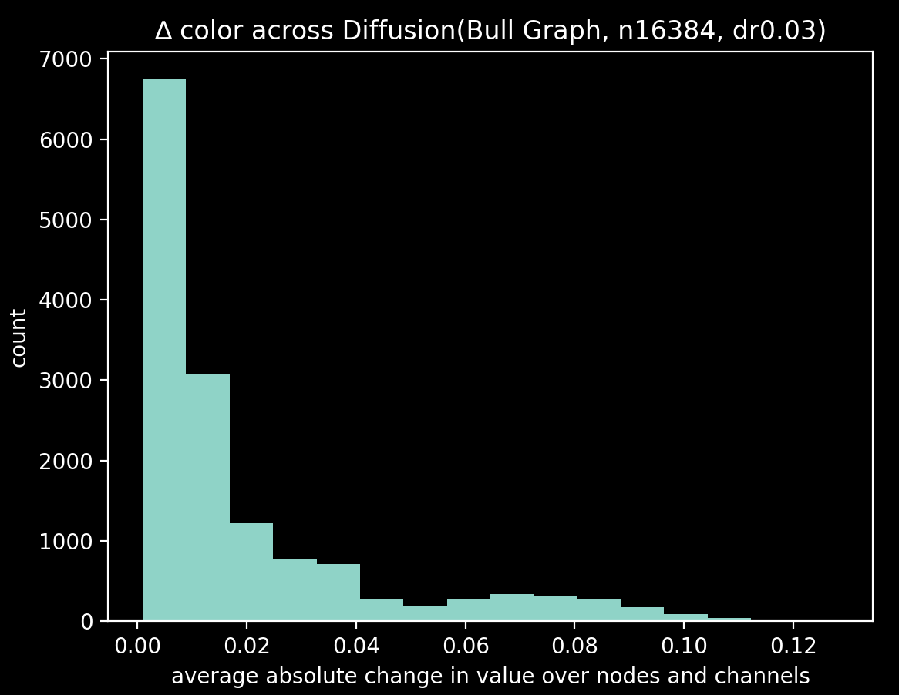

Everything's a graph
My name's Eric. Welcome to my blog.
Graphs can be learned
- date: October 31, 2022
- data uid: e4dd05
Introduction
Shchur et al. 2019
arXiv:1811.05868
provide a clear-eyed set of pitfalls to avoid when developing with graph neural nets. Two prominent point stand out:
- Sometimes smaller nets do better
- Don't cherry-pick the training runs you report
To set a foundation for more graph stuff, here I'll implement the baseline models they suggest and show how those models
perform on a simple prediction task.
Models
On the first point, I'll endeavour to fit the smallest capable models possible among three basic classes of models:
- A linear model
- A single-layer fully connected neural net
- A single-layer graph convolutional neural net
The neural nets have a single layer and feed into a relu activation. As the RGBA values are each in [0,1], neither input
nor output embeddings are required.
Data
For a graph G with degree matrix D and adjacency matrix A, a linear diffusion process here is defined recursively as
Xt+1 = (1-a)Xt + aLXt. The scalar a is the diffusion rate and L = A - D is the graph Laplacian. I've generated T =
2048 * 8 observations of this process on the Bull graph using a diffusion rate of a=0.03. Each Xt is a 4-channel
2-tensor holding the RGBA values for each node's color. The alpha channel is held constant at 1 and the three channels
are initialized independently from U[0,1]. After 8 steps, the colors are re-initialized.
TODO replay
The dataset consists of 16,384 observations (x=Xt, y=Xt+1). The average color change ∆=sum(|x-y|)/len(G) between steps
are plotted below:

The raw observations in this dataset are heavily skewed towards smaller changes - in the second half of the simulation,
most colors are similar. There's a bump at 0.07 - those observations are the re-initializations - they are removed in
the processed dataset.
Training
The spaghetti loss plots below show the train and test mean squared error falling as the models each learn the dataset.
Linear model
Appendix
The full set of experimental parameters are captured here:
TODO report; config
asdf
qwer
Older posts